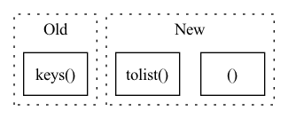

Pattern ID :26404
Before Change
device = int(self._device[-1])
if os.path.isdir(outdir) == False:
dataframes = []
for target in self._module_dict.keys() :
dataloader = make_dataloader(db = database, pulsemaps = pulsemap, features = self._features, truth = self._truth, batch_size = self._batch_size, shuffle = False, selection = None, num_workers = self.n_workers, persistent_workers= False)
trainer = Trainer(gpus = [device])
model = torch.load(self._module_dict[target]["path"], map_location = "cpu", pickle_module = dill)After Change
dataloaders, event_batches = self._setup_dataloaders(chunk_size = chunk_size, db = database, pulsemap = pulsemap, selection = None, persistent_workers= False)
i = 0
for dataloader in dataloaders:
print("CHUNK %s / %s"%(i, len(dataloaders) ))
df = self._inference(device, dataloader)
truth = self._get_truth(database, event_batches[i].tolist())
retro = self._get_retro(database, event_batches[i].tolist() )
self._append_to_pipeline(outdir, truth,retro, df, i)
i +=1
else:In pattern: SUPERPATTERN
Frequency: 3
Non-data size: 3
Instances Fragment ID: 79237881
Project Name: icecube/graphnet
Commit Name: 168ec8b73fbc8ab36f97a9d1cdb750a69b0fd137
Time: 2022-04-04
Author: rahn@outlook.dk
File Name: src/graphnet/data/pipeline.py
M Class Name: InSQLitePipeline
N Class Name: InSQLitePipeline
M Method Name: __call__(4)
N Method Name: __call__(3)
M Parent Class: ABC
N Parent Class: ABC
M File Name: src/graphnet/data/pipeline.py
N File Name: src/graphnet/data/pipeline.py
M Start Line: 50
M End Line: 64
N Start Line: 44
N End Line: 64
Before Change
device = int(self._device[-1])
if os.path.isdir(outdir) == False:
dataframes = []
for target in self._module_dict.keys() :
dataloader = make_dataloader(db = database, pulsemaps = pulsemap, features = self._features, truth = self._truth, batch_size = self._batch_size, shuffle = False, selection = None, num_workers = self.n_workers, persistent_workers= False)
trainer = Trainer(gpus = [device])
model = torch.load(self._module_dict[target]["path"], map_location = "cpu", pickle_module = dill)After Change
if os.path.isdir(outdir) == False:
dataloaders, event_batches = self._setup_dataloaders(chunk_size = chunk_size, db = database, pulsemap = pulsemap, selection = None, persistent_workers= False)
i = 0
for dataloader in dataloaders:
print("CHUNK %s / %s"%(i, len(dataloaders) ))
df = self._inference(device, dataloader)
truth = self._get_truth(database, event_batches[i].tolist())
retro = self._get_retro(database, event_batches[i].tolist() )
self._append_to_pipeline(outdir, truth,retro, df, i)
i +=1
else: Fragment ID: 79237883
Project Name: graphnet-team/graphnet
Commit Name: 168ec8b73fbc8ab36f97a9d1cdb750a69b0fd137
Time: 2022-04-04
Author: rahn@outlook.dk
File Name: src/graphnet/data/pipeline.py
M Class Name: InSQLitePipeline
N Class Name: InSQLitePipeline
M Method Name: __call__(4)
N Method Name: __call__(3)
M Parent Class: ABC
N Parent Class: ABC
M File Name: src/graphnet/data/pipeline.py
N File Name: src/graphnet/data/pipeline.py
M Start Line: 50
M End Line: 64
N Start Line: 44
N End Line: 64
Before Change
if relation_to_id is None:
if create_inverse_triples:
relation_to_id = create_relation_mapping(
set(relation_to_inverse.keys() ).union(set(relation_to_inverse.values())),
)
else:
relation_to_id = create_relation_mapping(unique_relations)After Change
// Check if the triples are inverted already
// We re-create them pure index based to ensure that _all_ inverse triples are present and that they are
// contained if and only if create_inverse_triples is True.
if filter_out_candidate_inverse_relations :
unique_relations, inverse = np.unique(triples[:, 1], return_inverse=True)
suspected_to_be_inverse_relations = {r for r in unique_relations if r.endswith(INVERSE_SUFFIX)}
if len(suspected_to_be_inverse_relations) > 0:
logger.warning(
f"Some triples already have the inverse relation suffix {INVERSE_SUFFIX}. "
f"Re-creating inverse triples to ensure consistency. You may disable this behaviour by passing "
f"filter_out_candidate_inverse_relations=False",
)
relation_ids_to_remove = [
i
for i, r in enumerate(unique_relations.tolist() )
if r in suspected_to_be_inverse_relations
]
mask = np.isin(element=inverse, test_elements=relation_ids_to_remove, invert=True) Fragment ID: 79237885
Project Name: pykeen/pykeen
Commit Name: a007a273ff146107fd1b0c099d561c7b7279965a
Time: 2020-12-10
Author: berrendorf@dbs.ifi.lmu.de
File Name: src/pykeen/triples/triples_factory.py
M Class Name: TriplesFactory
N Class Name: TriplesFactory
M Method Name: from_labeled_triples(7)
N Method Name: from_labeled_triples(6)
M Parent Class:
N Parent Class:
M File Name: src/pykeen/triples/triples_factory.py
N File Name: src/pykeen/triples/triples_factory.py
M Start Line: 169
M End Line: 222
N Start Line: 269
N End Line: 319